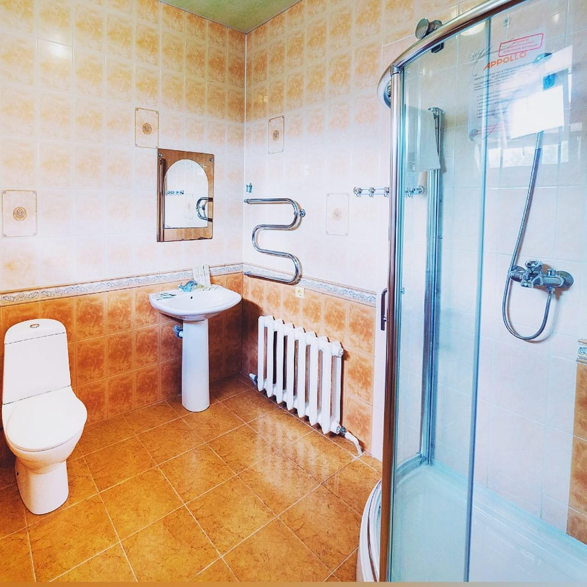
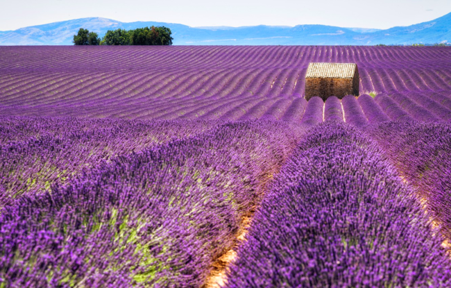
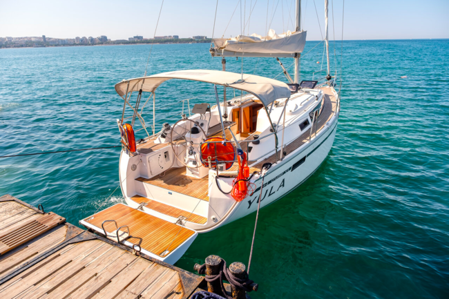

<section class="programs"><div class="programs__container container"><div class="programs__header head"><h2 class="programs__title title">Программа <span class="title-thin">тура</span></h2><span>Увлекательная программа, в которой сбалансировано море, вино, романтика и разнообразные активности</span></div><div class="programs__body" data-animate-on-scroll><div class="programs__carusel swiper-container"><div class="programs__wrapper swiper-wrapper"><div class="swiper-slide"><div class="swiper-slide-cont"><div class="swiper-slide__img swiper-container"><div class="programs-in-swiper swiper-wrapper"><div class="swiper-slide"></div><div class="swiper-slide"><div class="swiper-lazy-preloader"></div></div><div class="swiper-slide"></div><div class="swiper-slide"></div><div class="swiper-slide"></div></div></div><div class="programs-in-swiper__prev"></div><div class="programs-in-swiper__next"></div></div><div class="swiper-slide__info"><span>День 1</span><h3>Трансфер с аэропорта Геленджика до гостиницы</h3><p>Тур-лидер уже будет вас ждать с приветственным бокалом вкусного местного вина и легкой закуской из сезонных фруктов.<br><br><b>Свободное время</b> для того, чтобы отдохнуть и сходить на море, которое вас уже ждёт.<br><br>По нашей традиции в номере вас будет ждать бутылочка игристого с фруктами, чтобы вы могли расслабиться после перелёта и настроиться на красивый и яркий отдых.</p></div></div><div class="swiper-slide"><div class="swiper-slide-cont"><div class="swiper-slide__img swiper-container"><div class="programs-in-swiper swiper-wrapper"><div class="swiper-slide"><div class="swiper-lazy-preloader"></div></div><div class="swiper-slide"><div class="swiper-lazy-preloader"></div></div><div class="swiper-slide"><div class="swiper-lazy-preloader"></div></div><div class="swiper-slide"><div class="swiper-lazy-preloader"></div></div></div></div><div class="programs-in-swiper__prev"></div><div class="programs-in-swiper__next"></div></div><div class="swiper-slide__info"><span>День 2</span><h3>Шато-Пино, старый парк, дегустация вин и улиток</h3><p>Завтракаем и отдыхаем на берегу моря. К обеду <b>едем на улиточную ферму,</b> где продегустируем 6 вин в паре с улитками.<br><br><b>Винодельня «Шато-Пино» — экскурсия на виноградники</b> на склонах горы Колдун, улиточную ферму и <b>гравитационную винодельню</b> с дегустацией «Вино и Эскарго».<br><br>Вечер мы с вами проведем <b>в старом парке.</b></p></div></div><div class="swiper-slide"><div class="swiper-slide-cont"><div class="swiper-slide__img swiper-container"><div class="programs-in-swiper swiper-wrapper"><div class="swiper-slide"><div class="swiper-lazy-preloader"></div></div><div class="swiper-slide"><div class="swiper-lazy-preloader"></div></div><div class="swiper-slide"><div class="swiper-lazy-preloader"></div></div></div></div><div class="programs-in-swiper__prev"></div><div class="programs-in-swiper__next"></div></div><div class="swiper-slide__info"><span>День 3</span><h3>Геленджик, отдых и море</h3><p>Во <b>время свободного отдыха</b> мы будем рядом — подскажем, поможем. Наш тур-лидер всегда рядом и готов реализовать любое ваше пожелание и идею.</p></div></div><div class="swiper-slide"><div class="swiper-slide-cont"><div class="swiper-slide__img swiper-container"><div class="programs-in-swiper swiper-wrapper"><div class="swiper-slide"><div class="swiper-lazy-preloader"></div></div><div class="swiper-slide"><div class="swiper-lazy-preloader"></div></div><div class="swiper-slide"><div class="swiper-lazy-preloader"></div></div></div></div><div class="programs-in-swiper__prev"></div><div class="programs-in-swiper__next"></div></div><div class="swiper-slide__info"><span>День 4</span><h3>Подводный музей, баня и ужин на берегу моря</h3><p>В 12:00 начнётся наше погружение. Проведут инструктаж, подберут костюм и оборудование. <b>В музее на дне моря</b> (до 12м погружение) проведём 30-40 минут.<br><br>Далее будет <b>баня и стол из морепродуктов,</b> которые вот-вот ещё были в море. «Мидии по рыбацки» приготовленные в собственном соку, жаркое из рапана и конечно же вино.<br><br>Отдыхам, плаваем, кушаем и фоткаемся.</p></div></div><div class="swiper-slide"><div class="swiper-slide-cont"><div class="swiper-slide__img swiper-container"><div class="programs-in-swiper swiper-wrapper"><div class="swiper-slide"><div class="swiper-lazy-preloader"></div></div><div class="swiper-slide"><div class="swiper-lazy-preloader"></div></div><div class="swiper-slide"><div class="swiper-lazy-preloader"></div></div></div></div><div class="programs-in-swiper__prev"></div><div class="programs-in-swiper__next"></div></div><div class="swiper-slide__info"><span>День 5</span><h3>Геленджик, отдых на море и игра в «Мафия»</h3><p>Днём <b>отдыхаем и купаемся</b> .<br><br>Наступает вечер и мы собираемся за большим столом, чтобы надеть маски и изменить свою жизнь. Мы погружаемся в мистическую атмосферу <b>игры «Мафия»</b> и вступаемв поединок, где каждый сам за себя.</p></div></div><div class="swiper-slide"><div class="swiper-slide-cont"><div class="swiper-slide__img swiper-container"><div class="programs-in-swiper swiper-wrapper"><div class="swiper-slide"><div class="swiper-lazy-preloader"></div></div><div class="swiper-slide"><div class="swiper-lazy-preloader"></div></div><div class="swiper-slide"><div class="swiper-lazy-preloader"></div></div><div class="swiper-slide"><div class="swiper-lazy-preloader"></div></div><div class="swiper-slide"><div class="swiper-lazy-preloader"></div></div></div></div><div class="programs-in-swiper__prev"></div><div class="programs-in-swiper__next"></div></div><div class="swiper-slide__info"><span>День 6</span><h3>Винодельня «Долина Лефкадия»</h3><p>Будем <b>дегустировать вина и сыры с шеф-сомелье.</b><br><br>Отправимся на <b>автобусную экскурсию</b> с посещением: виноградников, питомника декоративных культур, платиновой аллеи, лавандовых полей, трюфельных плантаций, озера Гечепсин с прогулкой по мосту долголетия и Насыпному острову.<br><br>День завершим <b>ужином во французском саду.</b></p></div></div><div class="swiper-slide"><div class="swiper-slide-cont"><div class="swiper-slide__img swiper-container"><div class="programs-in-swiper swiper-wrapper"><div class="swiper-slide"><div class="swiper-lazy-preloader"></div></div><div class="swiper-slide"><div class="swiper-lazy-preloader"></div></div><div class="swiper-slide"><div class="swiper-lazy-preloader"></div></div></div></div><div class="programs-in-swiper__prev"></div><div class="programs-in-swiper__next"></div></div><div class="swiper-slide__info"><span>День 7</span><h3>Геленджик и отдых на яхте</h3><p>В первой половине дня <b>свободное время.</b><br><br>Потом мы отправимся в <b>открытое море на яхте.</b> Покатаемся, покупаемся в чистом море, насладимся красотами и <b>устроим рыбалку.</b> Улов приготовит кок. Вся наша прогулка будет сопровождаться вином, закусками и прохладительными напитками.<br><br>Далее встречаем <b>закат в открытом море</b> за чудесным ужином.</p></div></div><div class="swiper-slide"><div class="swiper-slide-cont"><div class="swiper-slide__img swiper-container"><div class="programs-in-swiper swiper-wrapper"><div class="swiper-slide"><div class="swiper-lazy-preloader"></div></div><div class="swiper-slide"><div class="swiper-lazy-preloader"></div></div><div class="swiper-slide"><div class="swiper-lazy-preloader"></div></div></div></div><div class="programs-in-swiper__prev"></div><div class="programs-in-swiper__next"></div></div><div class="swiper-slide__info"><span>День 8-9</span><h3>Геленджик, отдых и море</h3><p>Во <b>время свободного отдыха</b> мы будем рядом — подскажем, поможем. Наш тур-лидер всегда рядом и готов реализовать любое ваше пожелание и идею.</p></div></div><div class="swiper-slide"><div class="swiper-slide-cont"><div class="swiper-slide__img swiper-container"><div class="programs-in-swiper swiper-wrapper"><div class="swiper-slide"><div class="swiper-lazy-preloader"></div></div><div class="swiper-slide"><div class="swiper-lazy-preloader"></div></div><div class="swiper-slide"><div class="swiper-lazy-preloader"></div></div></div></div><div class="programs-in-swiper__prev"></div><div class="programs-in-swiper__next"></div></div><div class="swiper-slide__info"><span>День 10</span><h3>Анапа, «Гай-Кодзор» и живая музыка</h3><p><b>Выезжаем в Анапу</b> на дегустацию вин <b>винодельни «Гай-Кодзор».</b> Пробуем ещё одну линейку из самых вкусных вин и сыров краснодарского края.<br><br>Завершаем вечер в очень тёплой и красивой обстановке. Для вас будет <b>петь и играть</b> человек, который вкладывает в каждое произведение столько эмоций и чувств, что равнодушным остаться просто нет шанса.</p></div></div><div class="swiper-slide"><div class="swiper-slide-cont"><div class="swiper-slide__img swiper-container"><div class="programs-in-swiper swiper-wrapper"><div class="swiper-slide"><div class="swiper-lazy-preloader"></div></div><div class="swiper-slide"><div class="swiper-lazy-preloader"></div></div><div class="swiper-slide"><div class="swiper-lazy-preloader"></div></div></div></div><div class="programs-in-swiper__prev"></div><div class="programs-in-swiper__next"></div></div><div class="swiper-slide__info"><span>День 11</span><h3>Сборы домой и трансфер в аэропорт Галенджика</h3><p>Собираем вещи и <b>выезжаем в аэропорт Галенджика.</b><br><br>К концу тура вы приобретёте новых, таких же классных, как и вы, друзей и знакомых.<br><br>И будите мечтать о том, чтобы повторить это путешествие снова.</p></div></div></div></div><div class="programs__navigation"><div class="programs__prev"></div><div class="swiper-pagination"></div><div class="programs__next"></div></div></div></div></section>